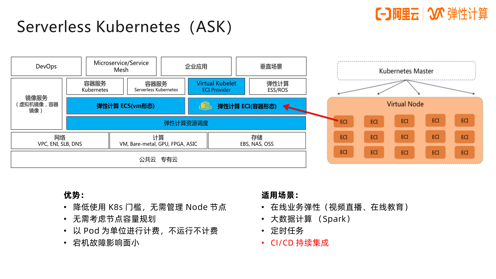
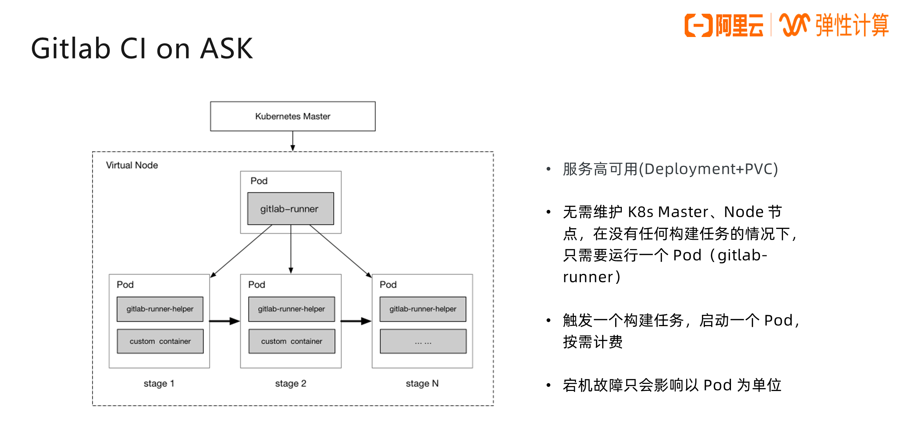
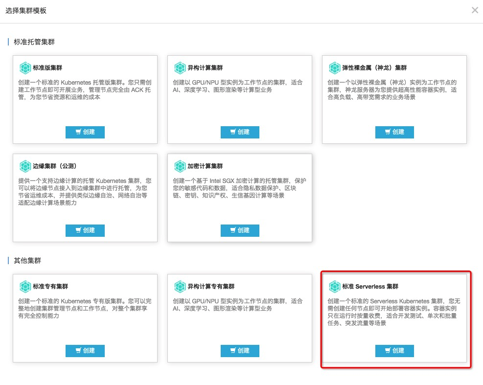
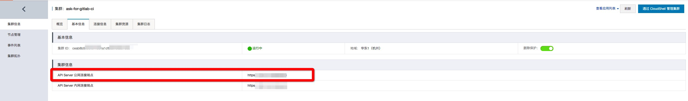
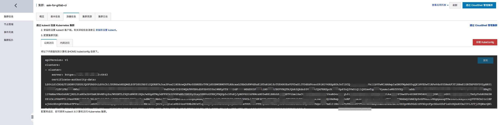
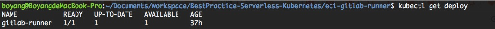
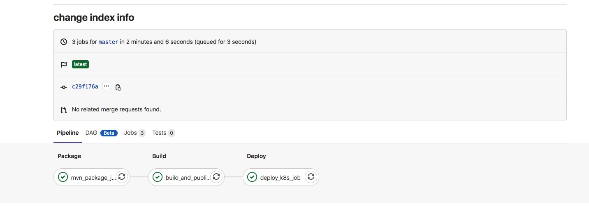
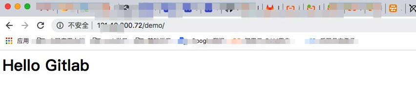
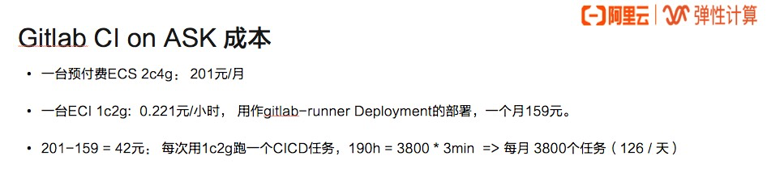

- 01 架构的演进.md.html
- 02 Serverless 的价值.md.html
- 03 常见 Serverless 架构模式.md.html
- 04 Serverless 技术选型.md.html
- 05 函数计算简介.md.html
- 06 函数计算是如何工作的？.md.html
- 07 函数粘合云服务提供端到端解决方案.md.html
- 08 函数计算的开发与配置.md.html
- 09 函数的调试与部署.md.html
- 10 自动化 CI&CD 与灰度发布.md.html
- 11 函数计算的可观测性.md.html
- 12 典型案例 1：函数计算在音视频场景实践.md.html
- 13 典型案例 3：十分钟搭建弹性可扩展的 Web API.md.html
- 14 Serverless Kubernetes 容器服务介绍.md.html
- 15 Serverless Kubernetes 应用部署及扩缩容.md.html
- 16 使用 Spot 低成本运行 Job 任务.md.html
- 17 低成本运行 Spark 数据计算.md.html
- 18 GPU 机器学习开箱即用.md.html
- 19 基于 Knative 低成本部署在线应用，灵活自动伸缩.md.html
- 20 快速构建 JenkinsGitlab 持续集成环境.md.html
- 21 在线应用的 Serverless 实践.md.html
- 22 通过 IDEMaven 部署 Serverless 应用实践.md.html
- 23 企业级 CICD 工具部署 Serverless 应用的落地实践.md.html
- 24 Serverless 应用如何管理日志&持久化数据.md.html
- 25 Serverless 应用引擎产品的流量负载均衡和路由策略配置实践.md.html
- 26 Spring CloudDubbo 应用无缝迁移到 Serverless 架构.md.html
- 27 SAE 应用分批发布与无损下线的最佳实践.md.html
- 28 如何通过压测工具+ SAE 弹性能力轻松应对大促.md.html
- 29 SAE 极致应用部署效率.md.html
20 快速构建 JenkinsGitlab 持续集成环境
ASK 介绍

首先，ASK 是什么？ASK 是阿里云推出的无服务器版 Kubernetes 容器服务。与传统的 Kubernetes 服务相比，ASK最大的特点就是通过虚拟节点接入 Kubernetes 集群，而 Kubernetes 的 Master 节点也完全由阿里云容器服务托管。因此，在整个 ASK 集群中，用户无需管理和运维真实节点，只用关心 Pod 资源即可，ASK 中的 Pod 则由阿里云弹性容器实例 ECI 承载。
ASK 的优势主要有以下几点：
- 降低用户使用 Kubernetes 的门槛，无需管理 Node 节点；
- 无需考虑节点的容量规划；
- 以 Pod 为单位按需计费；
- 宕机故障影响面小，Pod 级别。
同时，ASK 主要适用的场景有：
- 在线业务弹性（视频直播、在线教育）；
- 大数据计算（Spark）；
- 定时任务；
- CI/CD 持续集成。
GitLab CI on ASK 的优势
说到 CI/CD，大家最熟悉的两个工具，一个是 Jenkins，另一个是 GitLab CI，随着 Devops 角色的流行，越来越多的企业采用 GitLab CI 作为持续集成的工具，下面给大家介绍下 GitLab CI on ASK。gitlab-runner 以 Pod 形式注册到 ASK 集群中，每个 CI/CD stage 也对应一个 Pod。

这么做的优势有以下几点：
- 服务高可用（Deployment+PVC）；
- 无需维护 K8s Master、Node 节点，在没有任何构建任务的情况下，只需要运行一个 Pod（gitlab-runner）；
- 触发一个构建任务，启动一个 Pod，按需计费；
- 宕机故障只会影响以 Pod 为单位。
实践演示
接下来给大家演示如何在阿里云 ASK 集群上部署 gitlab-runner，并且通过 gitlab CICD Pipeline 部署 Java 应用到 ASK 集群中。
其中涉及到的知识点主要有：
- 通过 configMap 保存 gitlab runner 和 executor 的配置；
- 通过 secret 保存 ASK 集群的访问凭证和镜像仓库的密钥；
- 通过 PVC 缓存 runner cache 和 maven 仓库；
- 通过 imageCache 缓存容器镜像。
本节课程涉及到的所有的配置文件（yaml）都已经上传到 github 供大家下载【下载链接】。
下面开始演示，视频版课程请点击【观看链接】。
1. 准备 ASK 集群
- 在【容器服务控制台】创建标准 Serverless K8s 集群

- 集群创建完成后，基本信息中有 API server 公网链接地址

- 连接信息中有 ASK 集群访问凭证

2. 准备 PV/PVC
准备两个 nas 盘，一个做 gitlab runner cache，一个做 maven 仓库，请自行替换 nas server 地址和 path
kubectl apply -f mvn-pv.yaml
kubectl apply -f mvn-pvc.yaml
kubectl apply -f nas-pv.yaml
kubectl apply -f nas-pvc.yaml
3. 准备 Secret
- kubeconfig 里的证书公私钥拷贝到 secret 中，secret.yaml
kubectl apply -f secret.yaml
- docker-registry 的认证信息，ECI 支持免密拉取，但是 push docker image 还是要用到
kubectl create secret docker-registry registry-auth-secret --docker-server=registry.cn-hangzhou.aliyuncs.com --docker-username=${xxx} --docker-password=${xxx}
- 查看生成的 secret 可以用以下命令
kubectl get secret registry-auth-secret --output=yaml
4. 准备 ConfigMap
把 gitlab runner 的 url、token，ASK 集群的 api server 地址拷贝到 config.yaml
kubectl apply -f config-map.yaml
5. 准备 imageCache（可选，节省镜像拉取时间）
目前 AS K默认安装了 imagecache-crd，可以用以下命令查询，如果没有可以自己安装
# 查看image cache crd 是否安转
kubectl get crd
# 安装image cache crd
kubectl apply -f imagecache-crd.yaml
# 制作imagecache
kubectl apply -f imagecache.yaml
6. 部署 gitlab runner
kubectl apply -f gitlab-runner-deployment.yaml

7. 进行一个简单的 CI 任务

git repo 中的 .gitlab-ci.yml 类似 Jenkinsfile，定义了构建任务的工作流。我们修改 demo 项目中的 src/main/webapp/index.jsp 文件，然后 git commit -m "change index info" 提交。 gitlab 中的流水线任务即被触发，整个流程涉及到编译、打包、部署。


成本
使用 ASK 与一台预付费 ECS 的成本对比：

从上述成本计算可以看出，当您每天的 CI/CD 任务少于 126 个时，使用 ASK+ECI 会比购买一台包年包月的 ECS 更加划算。在享受按需付费的同时，也降低了运维成本，更加重要的是，当业务规模扩大、CI/CD 任务数量陡增时，不再需要担心 Node 节点的扩容。ASK+ECI 的方案，可以被认为是 CI/CD 持续集成场景的量身标配。